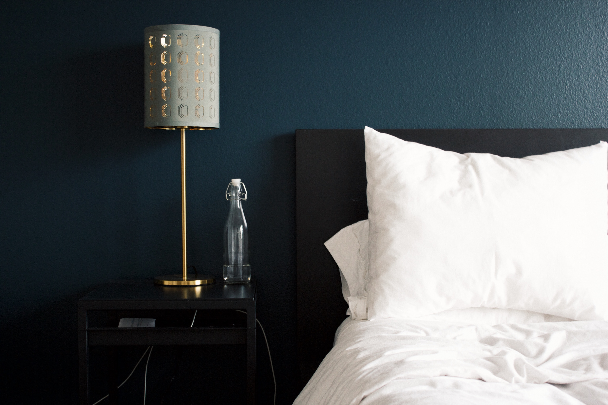

Liberty Hotel
215 Charles St, Boston, MA 02114
Set in a converted jail in the
vibrant Beacon Hill neighborhood, this hotel
has one of the best examples of the "Boston Granite
Style" of the mid-19th century. Completed in
1851, it is a building that
"resonated with a strength and dignity appropriate
for the era and for Bostonians' sensibilities".
Omni Parker House
60 School Street, Boston, MA, 02108
A legendary symbol in downtown Boston since 1855, Omni
Parker House is the longest continuously operating hotel
in the U.S. Many famous people have worked at the hotel,
such as Vietnamese Communist leader, Ho Chi Minh, and civil
rights activist, Malcolm X. Literary scholars such as Ralph
Waldo Emerson, Nathaniel Hawthorne, Henry Wadsworth
Longfellow, and Charles Dickens regularly met in the hotel's
restaurant.
Copley Square Hotel 47 Huntington Ave, Boston, MA, 02116
Built in 1891, the Copley Square Hotel is the second-
oldest operating hotel in the country and was the first
hotel in the Back Bay. It features an architectural mix of
Italian Renaissance and Beaux Arts style.
Modern Hotels
The Verb Hotel
1271 Boylston St, Boston, MA, 02215
Originally a 1959 motor inn, the Verb is a beautifully
restored hotel that pays homage to the building's funky
past while maintaining contemporary finishes and comforts.
The Envoy Hotel
70 Sleeper St, Boston, MA, 02210
Located just across the water from South Station and
the city's top historical sites, the Envoy has a sleek,
all-glass exterior that blends in with its neighborhood -
the thriving Seaport District.
Yotel Boston 65 Seaport Blvd, Boston, MA, 02210
Yotel Boston is a funky Japanese inspired hotel which offers
smartly designed spaces for a fraction of the price of a luxury
hotel accomodation - A great choice for trendy gadget-obsessed
travellers.

Convenient Hotels
Hotel Boston
40 Mt. Hood Rd, Boston, MA, 02135
Hotel Boston is an affordable, comfortable alternative to
Boston's more expensive hotel options. It offers free
Continental Breakfast and is close to the subway, as
well as Boston College and Boston University.
Studio Allston Hotel
1234 Soldiers Field Rd, Boston, MA, 02135
Studio Allston is a great, inexpensive hotel conveniently located
in the best spot in Boston. Inspired by Boston's eclectic creative
community, Studio Allston is a boutique hospitality experience.
Best Western Plus Boston
891 Massachusetts Ave, Dorchester, Boston, MA, 02118
The Best Western Plus Boston is a great bargain with excellent rooms.
It is located next to the Boston Medical Centre, Harvard University,
MIT, and the subway.